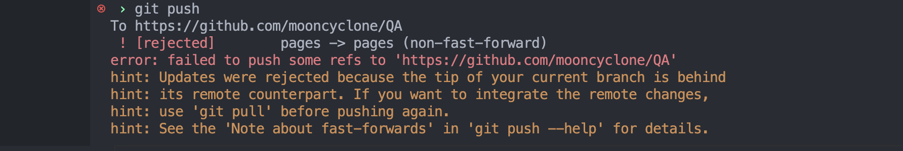
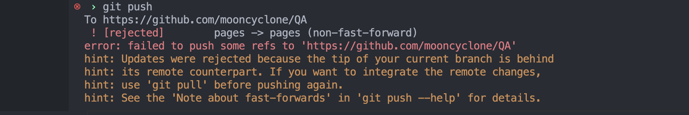
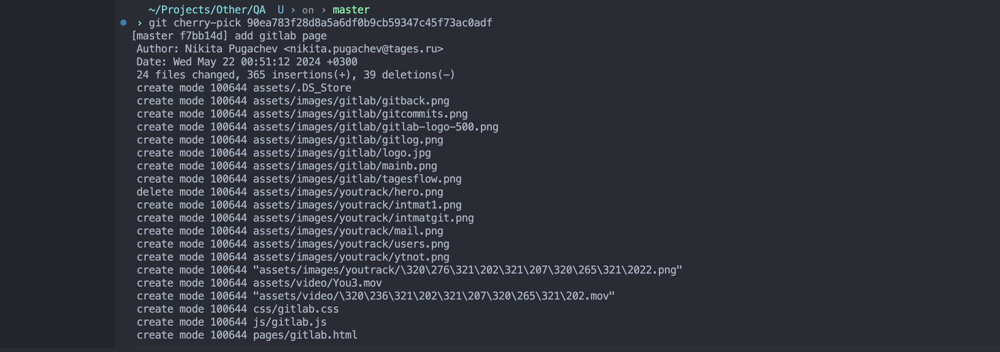
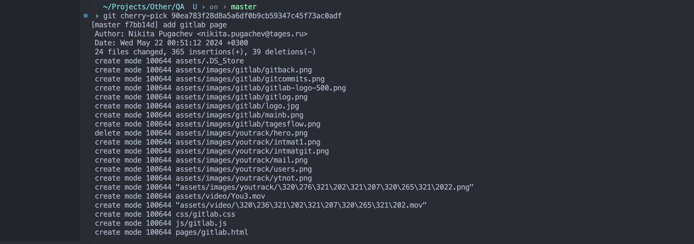

Infrastructure

Особенности
Временные особенности.
В работе учитывались особенности действия документов (сущностей) в рамках календарной работы и действия тех или иных документов. Все даты заменены на формат, применяемый в базе, а многие сроки действия документов переработы с учетом особенностей системы командами CURRENT_TIMESTAMP
JSON - объекты
Некоторые объекты в базе храняться как json объекты и работа с sql языком внутри них (установление текущей даты и времени) представляет некоторые особенности. В частности, с помощью команды jsonb_build_object и формирование массивов jsonb_build_array были сформированы и переработы некоторые сет на добавление специальных сущностей.
 


Займемся черешней
Для начала, необходимо узнать какой именно коммит будем переносить. Для этого воспользуемся командой git cherry -v master, находясь в ветке pages.
Узнав идентификатор, переходим на мастер ветку (куда будем перемещать наш коммит) git checkout master прописываем команду переноса git cherry-pick и вставляем идентификатор нашего коммита.
В результате проверим, что коммит находится на нужной ветке, при этом, идентификатор переписался, так как по сути, является новые для данной ветки, это надо учитывать.

Проблема выбора удаленного репозитория
Удаленные репозитории являются версиями наших локальных проектов и их может быть несколько, в зависимости от рабочего процесса. Для просмотра количество и адрес подключенных репозиториев достаточно ввести git remote -v. Однако, если клонировать репозиторий тут уже по умолчанию будет удаленная мастер ветка исходного проекта.

Datasets
Зачастую, сложные системы не существуют без специальной функциональной обвязкой, для проекта Trade это большой объем разного рода абстракций, входящих в друг друга или имея сложные связи-зависимости.
Для ускорения процесса разработки были прописаны датасеты, в виде SQL команды. Репозиторий с данными был загружен для удобства пользования командой.
Попробуем запушить (git push) изменения в ветку. Но сейчас это не удастся.
Это потому, что ваша локальная ветка и ветка на сервере отличаются. Причём не просто в локальной ветке есть некоторые коммиты, которых нет на сервере, но и старых коммитов нет. Ведь теперь один новый коммит вместо всех прежних. Чтобы запушить на сервер все изменения, несмотря на конфликт, запустим пуш с флагом --force: git push --force
И посмотреть список коммитов
Cherry pick
git cherry-pick — это полезная команда, с помощью которой можно выборочно применить коммиты Git к текущей рабочей ветке HEAD
Применима в командной разработке, когда новая функция продукта включает компоненты серверной и клиентской части, две составляющие продукта используют общий код или когда разработчик серверной части создает структуру данных, которую нужно будет использовать и в клиентской части. При этом разработчик клиентской части может с помощью команды git cherry-pick выбрать коммит, в котором условная структура данных была создана. Таким образом, он сможет продолжить работу над своими проектными задачами.
Или, при исправлениие багов. В ходе работы обнаруживается существующий баг, и разработчик создает специальный коммит для его исправления. Этот коммит можно перенести прямо в основную ветку (main), чтобы исправить баг, прежде чем от него пострадают другие пользователи.
 

Git - модули
Git решает проблему с синхронизацией изменений и использованием сторонних библиотек и собственной кодовой базы внутри проекта при их копировании. Подмодули позволяют сохранить один Git-репозиторий, как подкаталог другого Git-репозитория. Это даёт вам возможность клонировать в проект другой репозиторий, но коммиты при этом хранить отдельно.
Для начала, необходимо в репозитории создать файл .submodules и укзаать путь, куда будут попадать бинарники импортируемой библиотеке. Разберем на примере репозиторий с документацией, где в качестве сабмодуля выступает стороння тема для HUGO.
Далее, необходимо выполнить две команды, чтобы подсказать репозиторию о необходимости обозначения и загрузки подгружаемой библиотеке

В итоге, получаем библиотеку, загруженную в заданную папку в репозитории, готовой к использованию.
Допустим, мы хотим получить какие-то данные с другого репозитория, для этого воспользуемся командой git remote add new https://github.com/mooncyclone/blueberryEventHorizon, где git remote add - команда по добавлению репозитория, new - название нового репозитория и адрес.
Проверим теперь сколько подключено репозиториев. Теперь можем использовать новый репозиторий для получения данных git fetch new.
Чистый репозиторий?
Как и git init --bare, аргумент -bare при назначении команде git clone приводит к созданию копии удаленного репозитория без рабочего каталога. Это означает, что репозиторий будет содержать историю проекта, к которой можно выполнять запросы push и pull, но которую нельзя редактировать напрямую.
Кроме того, в репозитории, клонированном с опцией -bare, не будут настроены удаленные ветки. Как и git init --bare, эта команда создает удаленный репозиторий, который разработчики не смогут редактировать напрямую.